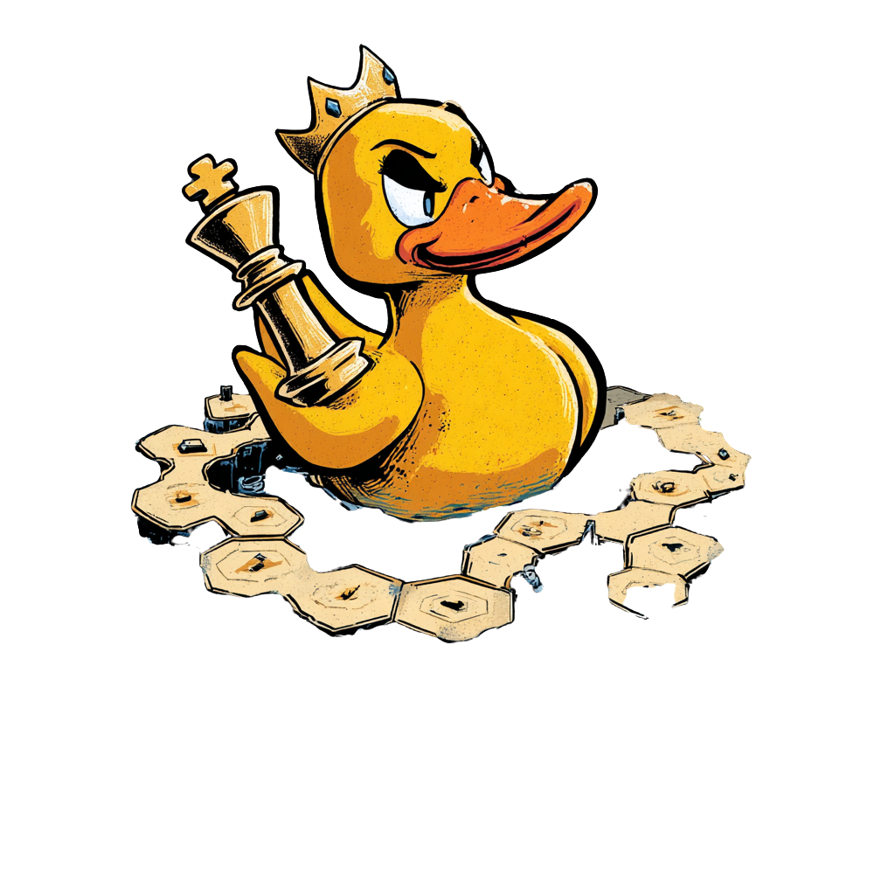

Board Game Club
Greetings ducklings, and welcome to the most competitive game club on this side of this pond we call Unicorn Factory: The Duckhouse!!
As an apple tends to gravitate towards the biggest centre of mass (our planet), so it was the will of the people that those curious with imagining competitions in different worlds were to be gravitated towards our clubhouse! The Duckhouse is the official board game club of the 42 Lisboa, designed to establish a meeting center for those who want to exhibit their skill in mastering different board games, and also to introduce any game that may not be public knowledge.
Our are for now scheduled to occur at Wednesday, between 18:00 - 21:00, with the ability to schedule further days according to public demand.
The badge/fidelity system is still a work in progress, please stay tuned for more!
This club is exclusive for members for the 42 Lisboa hub, so if you even get the chance to join the 42 School in Lisbon, please look for us on our Slack channels!
Hope to see as many ducklings as possible, and play on!